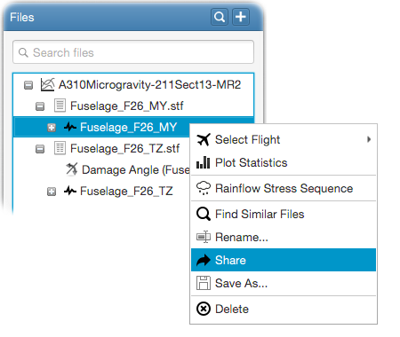

You can share the files in your Equinox database with other online and available users. All files in your
Equinox database can be shared with other online and available users. For this, right click on a file in the file tree and
select - Share
from the popup menu as shown in the following figure.

This will show a popup to select the users you want to share the file. Select the users and click - Share
. They will
be notified of the incoming file.
Recipient users will be able to save the shared files on their disk as a zip archive.